READ THE SYSTEM / FOLLOW THE EVIDENCE
A CSV and a goal go in. A runnable pandas/sklearn pipeline comes out—or a recorded reason to stop. This guide connects the code to the experiment: what each part does, what it leaves behind, and what the measurements say about keeping it.

A map of the system
Open a card to see its inputs, outputs and source. Follow the normal run left to right; repairs return to execution, while a re-plan returns to the Planner.
01 · Profile and state
Reads the goal, data files and dictionary. Writes a dataset profile and typed RunState. profile_dir inspects the data; init retrieves memory.
schemas.py ↗
02 · Planner
Reads the goal, profile and retrieved context. Writes an ordered Plan: each step has inputs, outputs and acceptance checks. A re-plan also sees the earlier plan and escalation reason.
03 · Executor
Reads one step, prior artifacts and retrieved skills. Writes Python, runs it, and records stdout, stderr and artifacts in a StepAttempt.
sandbox/runner.py ↗
04 · Tools and Critic
Reads actual files, not just the Executor’s claims. Validators produce findings; the Critic returns an accept, revise or escalate Verdict with confidence.
agents/roles.py ↗
05 · Reviser and routing
Reads the step, verdict and revision history. Writes repair instructions or an escalation. build_graph routes the result, limits loops and checkpoints every node to SQLite.
graph/build.py ↗
06 · Delivery and scoring
Assembles accepted scripts, reruns them cleanly and smoke-tests predictions. Only after the graph stops does the benchmark checker use hidden labels. App uploads have no hidden reference answer.
graph/checks.py ↗bench/checker.py ↗

01 / Read what is actually in the data
The profiler reads formats, columns, row counts and missing values before a model writes code. The data dictionary matters: a numeric column can be a category, a sentinel can look like a measurement, and two identical rows can still be two real purchases.
A real failure: repeated retail transactions were labelled as duplicates. Fourteen team runs removed valid purchases. The profiler’s wording was changed after the experiment; the original scores were not rewritten. A useful warning must describe what was observed without pretending that the correct cleaning action is already known.
Files: profile.py, the failure taxonomy.
02 / Turn the goal into inspectable steps
The Planner produces a typed plan, not a free-form conversation. Each step names its intent and acceptance checks. The state keeps both the plan version and the evidence from attempts, so a re-plan can be inspected afterwards.
The credit-default tour begins with loading, cleaning, feature engineering, splitting, training, evaluation and reporting. It also shows the second plan. The first plan was not erased from the story just because the final pipeline passed.
Why separate a Planner? It makes the proposed work inspectable. That is an engineering property, not proof that it improves answers: the whole-pipeline baseline won the measured no-memory comparison.
Files: planner.py, schemas.py, versioned prompts.
03 / Run the code and keep the evidence
The Executor writes a Python step and runs it in a per-run workspace. On Linux, process namespaces and resource limits restrict access, network use, memory and execution time. The model does not see the hidden benchmark answers. On macOS, the fallback runner is a timeout-controlled subprocess, not an isolation boundary.
The Observer records each model request and response, prompt versions, tokens, latency and shadow cost. Parsed plans, findings and verdicts live in the checkpointed state. These are complementary records, not interchangeable logs.
Measured limitation: seven failed runs exceeded the sandbox’s memory limit. They were treated as infrastructure failures and retried, rather than asking the Reviser to choose a smaller representation. Isolation worked; the recovery policy was the wrong tool for that failure.
Files: executor.py, runner.py, observer.py.
04 / Check the artifacts, then check the checker
Validation tools inspect leakage, missing values, row accounting and other concrete properties. The Critic reads those findings and chooses a verdict. The Reviser can request another attempt; exhausted repairs can trigger a re-plan. Low confidence or exhausted limits can stop for a human.

Why keep an independent check? Critic agreement was κ 0.30. Its confidence was almost always maximal. The run’s confident verdict is evidence of what the model believed, not evidence that the artifact was correct. Read the audit.
05 / Deliver from a clean start
Delivery assembles accepted scripts into output/pipeline.py, reruns them from a clean copy and smoke-tests prediction. The graph has nine nodes: init, plan, execute, validate, critic, revise, advance, deliver and human. advance moves the cursor after an accepted step; human is an explicit stop path.
The benchmark wrapper then applies the hidden checker. A successful graph status does not guarantee a passed benchmark. Predictive tasks also need coverage of the hidden rows, an adequate score and an honest validation estimate; analytical tasks need the right answer.
The tour’s final checks show both layers separately. This boundary also explains why an uploaded CSV can receive delivery checks but not a claim of hidden-test accuracy.
Files: graph/build.py, bench/checker.py, benchmark contract.
What did the extra structure buy?

The single agent reached 0.88 success, the no-memory team 0.50. The baseline can rewrite the whole program; the team can diagnose a fault in an earlier file while only repairing the current step. More feedback did not automatically produce a better repair.

All stores together reached 0.71. The paired improvement over no memory still includes zero. Development-only mining protects the evaluation split, but it does not guarantee that a retrieved strategy is useful for the next dataset.
Take it out of the benchmark
The field test uses fresh wine, student and household-power data. The tour follows a single credit-default run through plans, code, repairs and scoring. Both are recorded evidence, not live model demos.
Rebuild this guide
pip install -e '.[docs]'
python scripts/build_portfolio.py
python -m http.server 8000 --directory site
# Open http://localhost:8000
No model, dataset download or private checkpoint is needed. The builder reads committed summaries and the existing generated research documents. To run agents, follow the Linux setup in the README.
Repository map
Line counts are generated from the source tree on each build. Expand to inspect the complete map.
Python source files and line counts
Glossary
| Term | Meaning here |
|---|---|
| Agent role | A model call with its own inputs, prompt and typed output contract. |
| Artifact | A file produced by a step and available for later steps or checks. |
| Checkpoint | The typed run state saved after a graph node, supporting inspection and resume. |
| Hidden checker | Code outside the agent graph that compares output against held-back evidence. |
| Shadow $ | Token counts multiplied by a pinned price table; not a bill. |
| Paired interval | Uncertainty on a difference using the same tasks and seeds for both systems. |
| Re-plan | Replace the current plan after escalation, retaining the earlier evidence. |